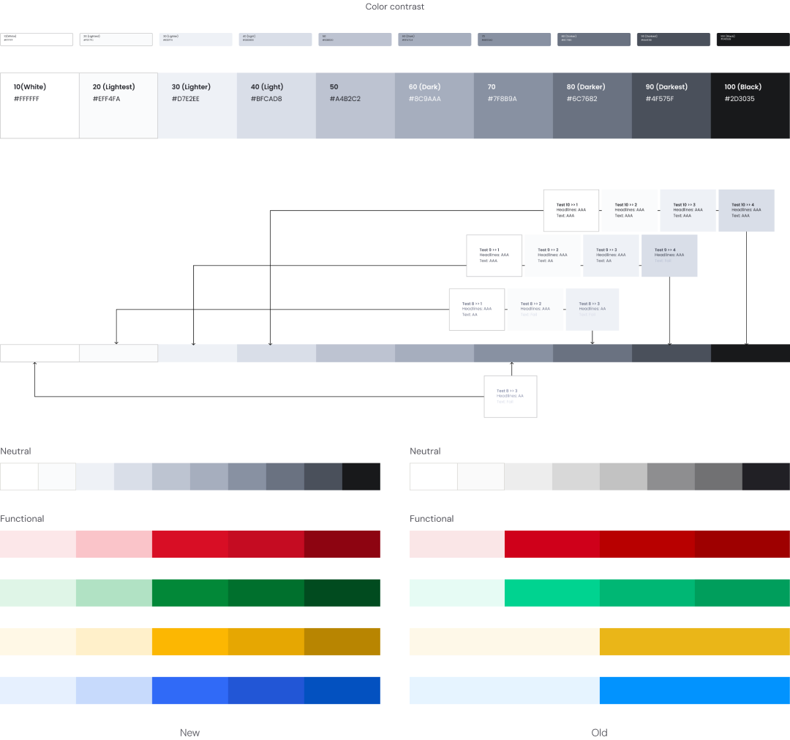
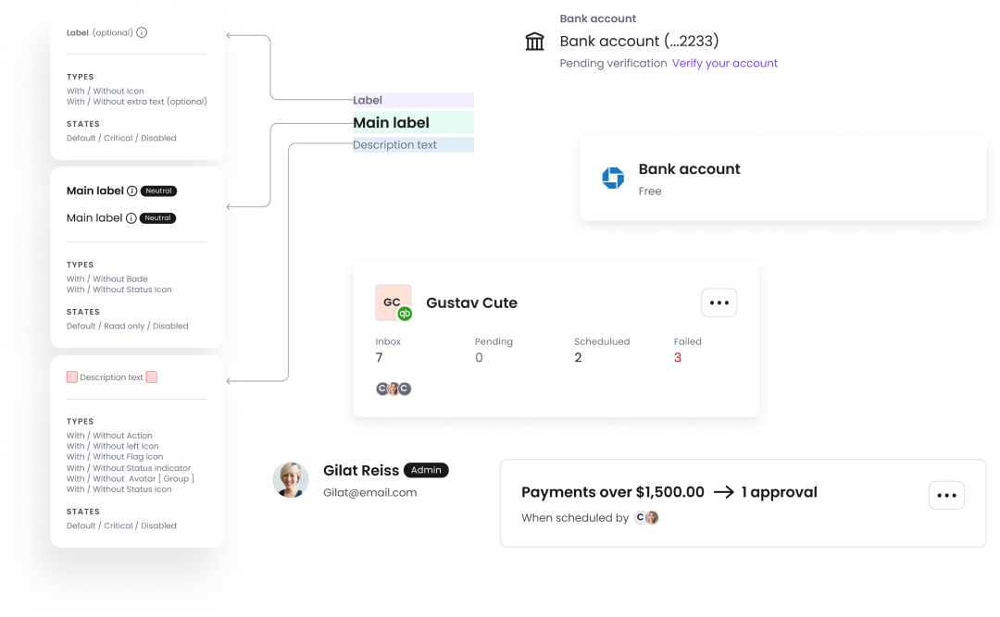
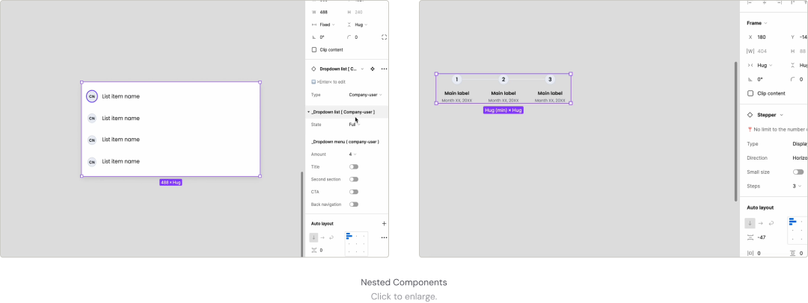
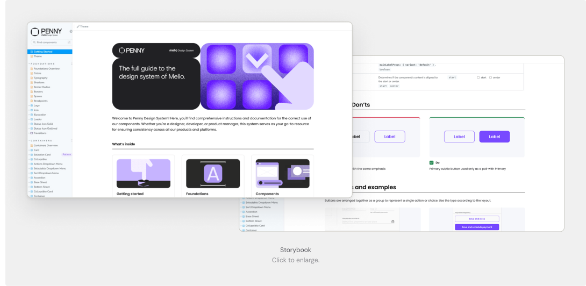
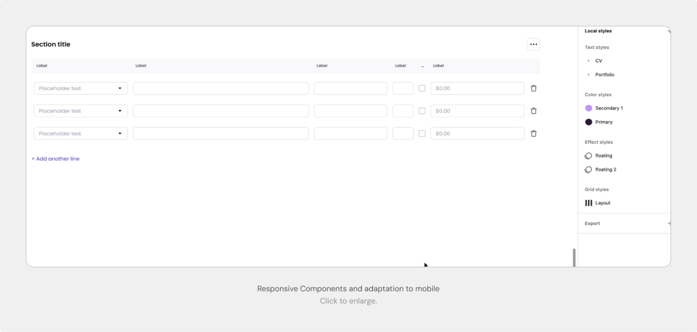
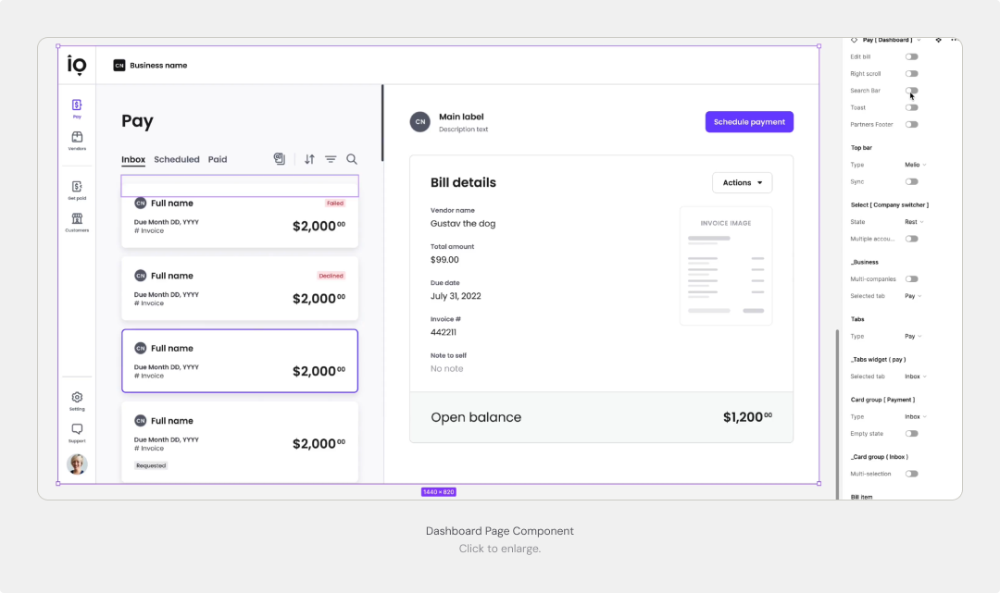
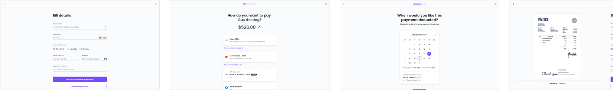
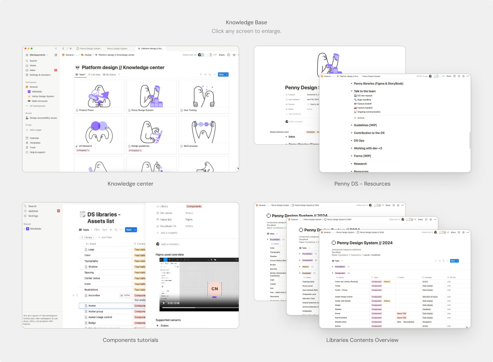
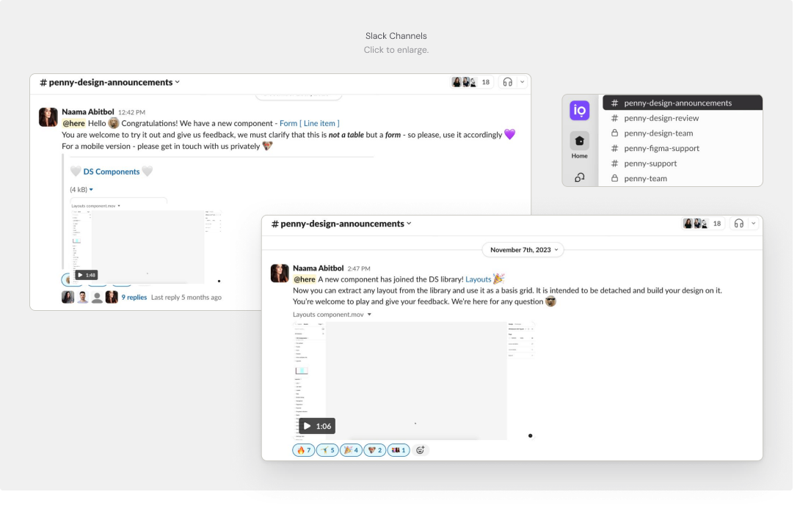
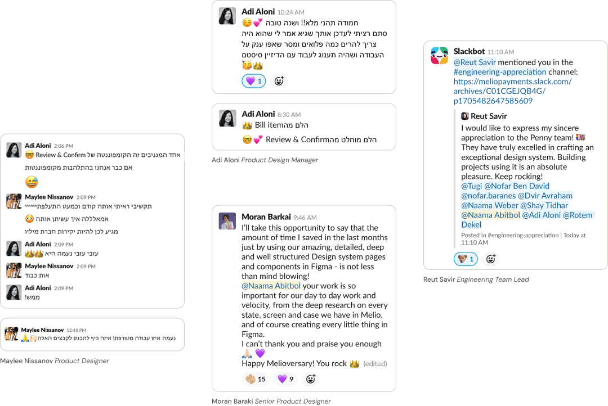

The problem
Designers stopped trusting the system — defective components, missing documentation, and outdated libraries slowed every team.
The work
Rebuilt the foundations, audited components into reusable atoms, documented everything in Figma and Storybook, and set up cross-team workflows.
The outcome
Faster design and dev cycles, fewer detached components, and a system solid enough to ship to partners as a standalone product.
Overview
Melio is an accounts payable platform for small businesses, processing $20B annually. Behind that scale sits Penny — Melio's design system. We made it the single source of truth for design and development — fixing usability issues and system bugs, refining guidelines, and unifying the component library across Figma and Storybook. The result: faster work, fewer detached components, more team autonomy — and a system strong enough to ship to partners as a standalone product.
My Role
Partnering with a design manager and 6 developers, I led cross-platform standardization for desktop and mobile, serving as the gatekeeper for design system consistency across all teams. My responsibilities included:
- •Led strategic design and product decisions, aligned with business goals and deadlines.
- •Collaborated with cross-functional teams on Melio's native and white-label platforms.
- •Conducted design reviews to maintain consistency and quality.
- •Worked closely with PMs to define requirements and strategic goals.
- •Resolved issues and kept communication smooth, internally and externally.
- •Ran design and user research to ground solutions in real user and business needs.
Designers stopped trusting the system, so they stopped using it.
The result
inconsistent designs across teams, friction in collaboration with developers, and a slower workflow.
Our user base spans 8 teams, with designers as the primary users. We collected feedback from stakeholders and peers to identify the key pain points:
01
No single source of truth
Poor visibility and documentation in Figma and Storybook led to inconsistency and confusion.
02
Technical issues and limitations
Defective components caused delays and eroded trust, requiring frequent fixes.
03
Open access to outdated libraries
Unrestricted entry to old libraries caused redundant work and confusion.
04
Developer-centric design library
Prioritizing developers over designers hindered workflow and efficiency.
Goals
01
Solid infrastructure
Enhance the design system's infrastructure and improve component quality.
02
Trust by default
Establish trust, so designers and developers rely on the system.
03
Autonomous teams
Boost team autonomy and streamline development processes.
Core Assumption
A unified design system will build team trust — faster work, better collaboration, higher efficiency.
What would success look like?
- •Designers use components more — without detaching them.
- •Development moves faster, producing new features efficiently.
The team vision was clear: give our users — designers and developers — the most efficient environment to design and code in, focused on speed, quality, and ease of use.
Execution
Foundations that hold up
We redesigned the foundations library with a focus on accessibility and readability — refining font sizes and styles, improving the color palette, and running contrast testing.

Execution
Atoms before organisms
We audited existing components to build reusable atoms, mapping all edge cases and zero states. This established consistent patterns, eliminated duplication, and secured a strong groundwork for the system.


Execution
One truth, in Figma and Storybook
We developed a Storybook library mirroring the design system's capabilities in Figma to ensure alignment with production, with detailed documentation for each component — explicit guidelines, definitions, and best practices for designers and developers.

Execution/01
Every screen size, one system
We created mobile-optimized component versions and defined responsive behavior for seamless compatibility across screen sizes and devices.

Execution/02
A flow from scratch, in minutes
We set up a library of page components and flow screens to streamline the design process — enabling designers to spin up a flow from scratch quickly and efficiently.


Execution/03
Self-serve knowledge
We built resource libraries in Notion with easy access for designers, promoting collaboration and continuous learning — and keeping the design library transparent and aligned with each component's development stage.

Execution/04
Workflows instead of DMs
To streamline collaboration, we established structured workflows for component requests, updates, and asset introduction — backed by dedicated feedback channels and regular cross-team kick-offs for continuous alignment and support through every planning and development stage.

What we accomplished
Trust, restored
We boosted efficiency, collaboration, and autonomy — contributing to the product's success and to the company's growth as a standalone offering for partners.
- •Dramatic improvement in designers' and developers' work times.
- •Fewer components detached by designers.
- •Fewer inquiries, thanks to clear and accessible knowledge.
- •Increased use of atomic components for independent team work.
